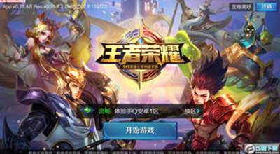
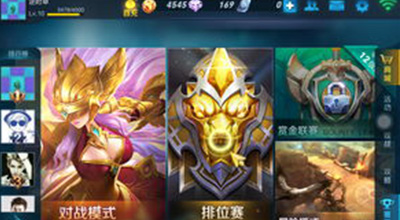

《王者荣耀》是由腾讯游戏开发并运行的一款运营在Android、IOS平台上的MOBA类手机游戏，于2015年11月26日在Android、IOS平台上正式公测，游戏前期使用名称有《英雄战迹》、《王者联盟》。《王者荣耀》登陆任天堂NS平台。2017冬测试游戏是类dota手游，游戏中的玩法以竞技对战为主，玩家之间进行1V1、3V3、5V5等多种方式的PVP对战，还可以参加游戏的冒险模式，进行PVE的闯关模式，在满足条件后可以参加游戏排位赛等。2016年11月，《王者荣耀》荣登2016中国泛娱乐指数盛典“中国IP价值榜-游戏榜top10”。2017年7月2日，腾讯方面发出游戏“限时令”：7月4日起《王者荣耀》12周岁以下(含12周岁)未成年人每天限玩1小时，并计划上线晚上9时以后禁止登陆功能；12周岁以上未成年人每天限玩2小时。超出时间的玩家，将被游戏强制下线。


版权所有©王者荣耀